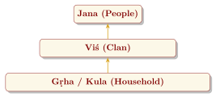

Chapter 14: Vedic Society: Priesthood, Ritual, Class and Daily Life¶
Invocatory Verse
saṃ gacchadhvaṃ saṃ vadadhvaṃ saṃ vo manāṃsi jānatām
devā bhāgaṃ yathā pūrve saṃjānānā upāsate
Come together, speak together, let your minds be of one accord,
as the gods of old, being of one accord, sit down to their share.
— Ṛgveda 10.191.2
14.1 Introduction: Reconstructing Vedic Society¶
The Vedic texts are religious works, but they contain many incidental references to social organisation, economy, family and politics. From them historians reconstruct a picture of society that changed greatly over the Vedic period. Scholars usually distinguish an Early Vedic period, reflected in the Ṛgveda (composed c. 1500–1200 BCE), centred on the Panjab, and a Later Vedic period, reflected in the other Saṃhitās, the Brāhmaṇas and the early Upaniṣads (c. 1200–500 BCE), during which the centre shifted to the Ganga–Yamunā Doab and further east (Thapar 2002; Witzel 1997). Because the texts were composed by and for priests and their patrons, they show society mostly from the top; the voices of women, of Śūdras and of the peoples the texts call dāsa are heard, if at all, indirectly.
14.2 The Social Structure¶
14.2.1 The Early Vedic Period¶
The society of the Ṛgveda was made up of clans of cattle-herders who also practised some agriculture and moved seasonally. The basic unit was the patrilineal household (gṛha, kula); households formed clans (viś), and clans formed peoples (jana) such as the Pūrus, Bharatas and Yadus. The word grāma originally meant a mobile band or trek rather than a settled village. There were no hereditary classes in the later sense, but there were clear distinctions of wealth and status: generous chieftains and patrons (maghavan), hereditary families of poet-priests, ordinary clansmen, and captives and servants. The texts also speak of enemies called dāsa or dasyu, who spoke differently, did not perform the Vedic rites and were often, though not always, opposed to the ārya; some dāsa chiefs appear as patrons, and dāsa came to mean “slave” or “servant” (Figure 14.1).

14.2.2 The Later Vedic Period¶
In the later Vedic period, settled agriculture became the basis of the economy, iron came into use, and small kingdoms emerged, above all the Kuru–Pañcāla realm, whose kings sponsored the great śrauta rituals. Society came to be described in terms of four hereditary classes (varṇas), with the Brahmins and Kṣatriyas claiming superiority over the Vaiśyas, who produced wealth, and the Śūdras, who served. The first references to groups regarded as impure, such as the caṇḍāla, also appear in this period.
14.3 The Archaeological Setting¶
The Vedic texts and the archaeological record are two very different kinds of evidence. The texts were composed and preserved orally, mention no pottery styles and few datable objects, and describe a world of ritual from the priests’ point of view; archaeology recovers settlements, graves, tools and pottery, but not the language their makers spoke or the hymns they sang. Correlating the two is therefore always a matter of matching regions, periods and ways of life, and every correlation is a hypothesis (Erdosy 1995; Singh 2008). With that caution, the archaeology of north-western and northern India in the second and early first millennia BCE provides a setting against which the textual sequence of Section 1.7 can be read.
The north-west in the second millennium BCE.
After about 1900 BCE the cities of the mature Harappan civilisation declined, and the north-west was occupied by smaller, regionally diverse “late Harappan” or post-urban cultures. Several archaeological complexes of this period have been discussed in connection with the arrival of Indo-Aryan speech. Beyond the subcontinent, the Sintashta culture of the southern Urals (c. 2100–1800 BCE) has yielded the earliest known spoked-wheeled chariots buried with horses, a combination central to the Ṛgveda, and the Bactria–Margiana Archaeological Complex of southern Central Asia (c. 2300–1700 BCE), with its fortified settlements and fire structures, has been proposed by Asko Parpola and others as a zone of contact through which Indo-Iranian speakers passed and from which they borrowed religious ideas and vocabulary (Anthony 2007; Parpola 2015). Within the subcontinent, the cemeteries of the Swat valley in the north-west (the so-called Gandhāra Grave culture, from the mid-second millennium BCE), with their cremations and inhumations and evidence of the horse, are among the cultures most often linked with early Indo-Aryans. None of these identifications can be proved, and each has its critics; the genetic evidence summarised in Section 1.8 is at present the strongest independent indication of movements of people into the region in this period.
The burials excavated at Sanauli in western Uttar Pradesh in 2018, which included wheeled vehicles dated by the excavators to about 2000–1800 BCE, have been presented by some as “chariots” of a Vedic type. Their wheels are solid, not spoked, and no horses were found with them, so that their interpretation as horse-drawn war chariots, and any connection with the Ṛgveda, remain unproven.
The Iranian side of the frontier offers a complementary perspective. The first chapter of the Avestan Vīdēvdād lists sixteen lands created by Ahura Mazdā, among them Haraxvaitī (Arachosia, in southern Afghanistan) and Hapta Hindu, the “Seven Rivers” that correspond to the Ṛgvedic sapta sindhavaḥ. Whatever its date, the list shows that the borderlands between the Iranian plateau and the Indus were known to both traditions, as the shared vocabulary of Table 1.3 would lead one to expect.
The Painted Grey Ware and the Kuru realm.
The best-known correlation concerns the later Vedic period. The Painted Grey Ware, a fine wheel-made grey pottery painted with simple black designs, is found at many hundreds of sites in Haryana, the Indian Panjab, northern Rajasthan and western Uttar Pradesh, and is usually dated c. 1200–600 BCE, with some earlier radiocarbon dates. Its distribution coincides strikingly with the Kuru–Pañcāla country of the later Saṃhitās and Brāhmaṇas, and at sites such as Hastināpura, Ahichchhatra, Atranjikhera and Bhagwanpura it is associated with modest agricultural villages of wattle-and-daub houses, the cultivation of rice, wheat and barley, cattle and horses, and the use of iron. B. B. Lal’s excavation at Hastināpura first suggested a link between this culture and the world of the later Vedic texts and the epic (see Volume 7, Itihāsa–Purāṇa) (Lal 1955); Witzel has connected the spread of Painted Grey Ware with the formation of the Kuru realm described in Section 14.9. The correlation is plausible in region, date and economy, but it remains a correlation: the pottery itself tells us nothing about language or ritual.
Iron.
The Atharvaveda’s “dark metal” (Section 1.7) fits the appearance of iron in Painted Grey Ware levels. Excavations in the central Ganga plain and the eastern Vindhyas have since produced iron in levels dated to the second millennium BCE (Tewari 2003), so that iron working in India began earlier and in more regions than was once assumed (see Volume 14, Rasāyana). The Vedic texts reflect its spread in the north-west and the Doab, not its first beginnings in the subcontinent.
The eastward shift.
The Śatapatha Brāhmaṇa (1.4.1) preserves a legend of this movement. Agni Vaiśvānara, carried in the mouth of King Videgha Māthava, burns his way eastward from the Sarasvatī, burning over the rivers as he goes, until he reaches the Sadānīrā, which he does not cross; the Brahmins had not crossed it either, for the land beyond was marshy and “untasted by Agni”. Now, the text says, many Brahmins live east of it, because they have made the land fit for sacrifice. The story has often been read as a memory of the extension of Vedic ritual culture, and of the clearing and settlement of land, into the eastern Ganga plain (Videha) in the late Vedic period. In archaeological terms, this is the region and period in which Painted Grey Ware gives way to the Northern Black Polished Ware (from about the seventh or sixth century BCE), and in which the towns, coinage and states of the “second urbanisation” and the new religious movements of the Buddha and the Jina emerged (Allchin 1995). The late Vedic texts and the earliest Buddhist and Jain texts thus describe neighbouring and partly overlapping worlds.
Table 14.1 summarises the main archaeological cultures discussed here and the textual layers with which they have been compared.
| Culture | Date | Region | Relation to the texts |
|---|---|---|---|
| Mature Harappan | c. 2600–1900 BCE | Indus and Ghaggar–Hakra basins, Gujarat | Before the Ṛgveda on the academic chronology; no certain link |
| Late (post-urban) Harappan | c. 1900–1300 BCE | Panjab, Haryana, Sindh, Gujarat | Contemporary in part with the early Ṛgvedic period |
| Gandhāra Grave culture | From the mid-second millennium BCE | Swat and neighbouring valleys | Often proposed as early Indo-Aryan |
| Painted Grey Ware | c. 1200–600 BCE | Haryana, Panjab, northern Rajasthan, western Uttar Pradesh | Region and date of the later Saṃhitās and Brāhmaṇas (Kuru–Pañcāla) |
| Northern Black Polished Ware | From c. 700–600 BCE | Ganga plain | Late Vedic and early Buddhist and Jain texts; the “second urbanisation” |
Taken together, the archaeological evidence supports the broad sequence derived from the texts: a Ṛgvedic world in the north-west in the second half of the second millennium BCE, a later Vedic world centred on the Doab in the late second and early first millennia, and an eastward extension towards the Ganga plain by the middle of the first millennium. It does not allow us to identify “the Vedic people” with any single pottery or burial type, and it is fully compatible with the mixed, multilingual society that the texts themselves imply.
14.4 The Varṇa System¶
14.4.1 Varṇa in the Ṛgveda¶
The word varṇa means “colour” or “appearance”, and hence “kind” or “class”. In most of the Ṛgveda it is used of the two opposed groups, the ārya varṇa and the dāsa varṇa: Indra, for example, “slew the Dasyus and protected the Ārya colour” (RV 3.34.9). Whether “colour” here refers to skin colour, to light and darkness as symbols of friend and foe, or simply to “kind” is debated; the nineteenth-century racial reading is no longer accepted as established. Words for priest (brahman) and ruler (rājan, kṣatra) are frequent, but a fourfold hereditary order is not.
The four classes appear together only once in the Ṛgveda, in verse 12 of the Puruṣa Sūkta (RV 10.90), a hymn of the latest layer. The verse, quoted in Section 2.5.3, says that the Brahmin was the mouth of the sacrificed cosmic Man, the Rājanya his arms, the Vaiśya his thighs, and that the Śūdra was born from his feet.
The image is one of a single body, and later writers have often emphasised this organic unity, arguing that the four classes were meant to be complementary functions rather than ranks. That reading is a later interpretation. The hymn itself places the Brahmin at the mouth and the Śūdra at the feet, and it was understood in this hierarchical sense from the Brāhmaṇas onward. Its main historical significance is that it gave a sacred, cosmic charter to social inequality.
14.4.2 Varṇa in the Later Vedic Texts¶
The Brāhmaṇas state the hierarchy explicitly. A well-known passage of the Aitareya Brāhmaṇa (7.29), describing what each class’s descendants would be like if a king consumed the wrong portion at the sacrifice, characterises the Vaiśya as “paying tribute to another, to be lived on by another, to be oppressed at will”, and the Śūdra as “the servant of another, to be removed at will, to be slain at will”. Śūdras were excluded from the śrauta ritual and from Vedic study. The Chāndogya Upaniṣad (5.10.7) teaches that people of good conduct are reborn in a Brahmin, Kṣatriya or Vaiśya womb, and people of foul conduct in the womb of a dog, a pig or a caṇḍāla—an early sign of the idea that birth in a low group results from past deeds, and of the treatment of some groups as untouchable (Table 14.2).
| Varṇa | Body part (RV 10.90) | Prescribed Occupations | Ritual Status |
|---|---|---|---|
| Brāhmaṇa | Mouth | Studying and teaching the Veda; sacrificing for self and others; receiving gifts | Initiated (“twice-born”) |
| Kṣatriya | Arms | Protection, rule, war | Initiated |
| Vaiśya | Thighs | Agriculture, cattle-rearing, trade | Initiated |
| Śūdra | Feet | Serving the other three | Not initiated; excluded from Vedic study |
14.4.3 Varṇa, Jāti and the Later History of Caste¶
The four varṇas were always a theoretical scheme. The social reality of caste consists of thousands of endogamous, often occupational groups (jātis), which the Dharmaśāstras later tried to fit into the varṇa scheme by explaining them as the offspring of “mixed” marriages. The Dharma Sūtras (c. 3rd–1st centuries BCE) and the Mānava Dharmaśāstra (c. 2nd century CE) codified the privileges of Brahmins, the disabilities of Śūdras and the exclusion of untouchable groups (Olivelle 1999). Genetic studies suggest that Indian population groups mixed extensively between roughly 4,200 and 1,900 years ago, and that strict endogamy became widespread only towards the end of that period, that is, around the time when these texts were composed (Moorjani et al. 2013).
The varṇa scheme has been debated ever since. The Buddha and the Jina rejected the claim that birth determines worth; the Bhagavadgītā (4.13) speaks of the four varṇas as created “according to qualities and actions”, a verse that modern reformers read as meaning that varṇa should depend on aptitude rather than birth; and medieval devotional poets attacked caste pride. In modern India, Dayānanda Sarasvatī and M. K. Gandhi argued for a reformed, non-hereditary varṇa, while B. R. Ambedkar argued that the system was rooted in the sacred texts themselves, and in Who Were the Shudras? (1946) and Annihilation of Caste (1936) called for its abolition (Ambedkar 1946; Sharma 1990). The Constitution of India (1950) abolished untouchability (Article 17).
Scholarly Note: Reading the Puruṣa Sūkta Today
It is possible to admire the poetry and cosmology of the Puruṣa Sūkta while recognising what it did. Two common responses should both be avoided: dismissing the whole Vedic corpus because of this hymn, and explaining away its hierarchy as “functional complementarity”. The historian’s task is to show how a late hymn became the charter of a social order that brought privilege to some and lasting suffering to many, and how that order was challenged within Indian tradition itself.
14.5 The Vedic Priesthood¶
The great rites required specialised priests trained in different Vedas: four in the simplest offerings and sixteen, in four groups led by the hotṛ, the adhvaryu, the udgātṛ and the brahman, in the Soma sacrifice. Their division of labour, their texts and their fees are described in Section 8.3 (Figure 8.2). Socially, the priesthood became the hereditary preserve of Brahmin families, identified by their lineage (gotra) and its ancestral seers (pravara) and by their affiliation to a Vedic school (Chapter 12). The alliance between a king and his household priest (purohita), which the last book of the Aitareya Brāhmaṇa treats as indispensable to royal power, became a central element of political ideology (Section 14.9).
14.6 The Life-Cycle Rites¶
The life-cycle rites (saṃskāras) of the Gṛhyasūtras, described in Chapter 9 (Table 9.2), are also a social record. Many of them are still performed in Hindu families. But initiation, and with it Vedic study, was restricted to boys of the upper three varṇas; several rites aim specifically at the birth of sons; and for daughters the rites of childhood were to be performed without Vedic mantras.
14.7 Women in Vedic Society¶
The position of women in the Vedic period has been the subject of a long debate. Nationalist historians such as A. S. Altekar argued that women enjoyed high status in the early Vedic period and that it declined later; feminist historians such as Uma Chakravarti and Kumkum Roy have criticised the idea of a Vedic “golden age” and emphasised the patriarchal structures already present in the texts (Altekar 1938; Chakravarti 2003; Roy 2010). The evidence points both ways:
-
Participation: the sacrificer’s wife (patnī) was required in the śrauta ritual, with her own ritual roles (Jamison 1996); a few hymns are ascribed to women poets, and the Upaniṣads show women such as Gārgī and Maitreyī taking part in philosophical debate.
-
The household: a Ṛgvedic poet says “the wife is the home” (jāyed astam, RV 3.53.4), and the wedding hymn (RV 10.85) wishes the bride to be mistress over her husband’s family.
-
Widows: the funeral hymn bids the widow rise from beside her dead husband and return to the world of the living (RV 10.18.8); whether this implies remarriage, perhaps to the husband’s brother, is debated. There is no evidence of widow-burning in the Ṛgveda.
-
Subordination: the texts are composed from a male point of view; prayers are overwhelmingly for sons, not daughters; descent and inheritance passed through men, and a Black Yajurveda passage (Taittirīya Saṃhitā 6.5.8.2) declares women to be without strength and without a share in inheritance.
-
Later restriction: in the Dharma Sūtras and Śāstras, women were excluded from Vedic study and initiation, and their dependence on father, husband and son was made a rule.
14.7.1 The Evidence in Detail¶
The general picture can be made more precise from the texts themselves. On women’s role in the solemn and domestic rites, see Chapters 8 and 9; on women’s education and the later debate about it, Volume 22, Manas and Śikṣā; on women in the law books, Volume 18.
Daughters and sons.
The preference for sons runs through the whole corpus. In the story of Śunaḥśepa told at the royal consecration, a verse addressed to the childless king Hariścandra says that “a wife is a companion, a daughter a misery, a son a light in the highest heaven” (sakhā ha jāyā kṛpaṇaṃ ha duhitā jyotir ha putraḥ parame vyoman, Aitareya Brāhmaṇa 7.13). The domestic rite of puṃsavana was performed in pregnancy to obtain a male child (Chapter 9). The reasons are clear in the texts: a son continued the line, performed the offerings to the ancestors and inherited the property.
The unprotected woman.
Several images in the Ṛgveda show what a woman’s position was when she lacked a husband or brother. A poet asks Indra for a share “like a girl growing old at home with her parents” (amājūr iva pitroḥ sacā satī, RV 2.17.7), an image that works only because the unmarried daughter without a portion of her own was a familiar figure. Dawn, who goes towards men, is compared to a “brotherless” woman (abhrātā iva, RV 1.124.7), that is, one without the male kin who would normally arrange her marriage. The later law of the “appointed daughter” (putrikā), whose son became her father’s heir, addressed the case of a father without sons. A verse of a hymn to the Aśvins asks who brings them to the place of sacrifice “as a widow brings her husband’s brother to bed” (RV 10.40.2), a simile that presupposes the custom by which a widow could be taken by her husband’s brother; it is often taken as the earliest evidence for the institution that the law books later call niyoga, and it bears on the interpretation of the funeral verse discussed above.
Co-wives.
Kings and rich men had more than one wife. The horse sacrifice names four wives of the king, of different rank, each with her own part in the rite. Two late hymns of the Ṛgveda are composed in a woman’s voice about rival wives: RV 10.145, a spell with a plant to drive away a co-wife and win the husband’s undivided love, ascribed by the Anukramaṇī to Indrāṇī, and RV 10.159, the triumphant song of a woman who has overcome her co-wives, ascribed to Śacī Paulomī. The Atharvaveda has more charms of this kind. Whoever their actual authors were, these are among the few Vedic texts that speak from a woman’s position in the household.
Impurity.
The Taittirīya Saṃhitā (2.5.1) tells how Indra’s guilt for killing Viśvarūpa was taken over in thirds by the earth, the trees and women, and how women received in return the boon of conceiving children and of desire until childbirth; the guilt appears in them as their monthly impurity, and the passage goes on to prescribe restrictions on contact with a woman “in soiled garments”. The story is an early charter for the menstrual taboos of the later law books, and it shows how a myth could be used to explain and justify a social rule.
Women of learning.
The texts that name learned women also show that they were exceptions. The Bṛhadāraṇyaka Upaniṣad (4.5.1) says that of Yājñavalkya’s two wives “Maitreyī was one who discoursed on brahman (brahmavādinī); Kātyāyanī had only a woman’s understanding (strīprajñā)”: the praise of the one depends on a low expectation of the other. Gārgī Vācaknavī questions Yājñavalkya twice in the debate at Janaka’s court (BU 3.6, 3.8); the first time he silences her with the warning that her head will shatter if she asks too much, a threat he also uses against male opponents. Gārgī’s name, with those of Vaḍavā Prātītheyī and Sulabhā Maitreyī, also appears in the list of former teachers to whom libations are offered in the Āśvalāyana Gṛhyasūtra (3.4.4), which suggests that the Ṛgvedic schools remembered some women as authorities in their tradition.
The honest conclusion is that women’s position was neither equal nor uniformly low, that it varied by class and period, and that it became more restricted as the Brahmanical law books took shape.
14.8 Economic Life¶
14.8.1 Cattle and Agriculture¶
Cattle were the chief measure of wealth in the Ṛgveda. Raids for cattle were a principal form of warfare—gaviṣṭi, “desire for cows”, is a word for battle—and gotra, originally “cow-pen”, later came to mean “clan”. Agriculture is also attested: the Ṛgveda knows ploughing and the grain yava (barley, or grain in general). Rice (vrīhi) and wheat (godhūma) appear in the later Saṃhitās, as farming became the foundation of the later Vedic economy. Ploughing charms (AV 3.17) and the ploughing imagery of RV 10.101 show the importance of the field.
14.8.2 Crafts and Trade¶
The texts mention carpenters and chariot-makers (takṣan, rathakāra), smiths, weavers, potters, leather-workers, physicians and many others; the list of occupations in Vājasaneyi Saṃhitā 30 (the Puruṣamedha) is especially rich. RV 9.112 humorously compares the different aims of the carpenter, the physician and the priest. Trade is attested, including a merchant’s prayer (AV 3.15); references to the samudra and to the Aśvins’ rescue of Bhujyu from the waters (RV 1.116) have been read as evidence of sea voyages, though this is uncertain. There was no coinage in the Vedic period; cattle and gold ornaments served as measures of value (Table 14.3).
| Activity | Example of Evidence | Remarks |
|---|---|---|
| Cattle-rearing | RV 6.28 (hymn to the cows) | The chief form of wealth |
| Agriculture | RV 10.101; AV 3.17 | Ploughing; more prominent in later texts |
| Weaving | RV 10.130 | The sacrifice imagined as a woven fabric |
| Crafts | RV 9.112; VS 30 | Lists of occupations |
| Trade | AV 3.15 | A merchant’s prayer |
14.9 Political Organisation¶
In the early Vedic period the rājan was a tribal chief and war-leader, whose position depended on success in battle and on the support of his clansmen. The texts mention assemblies, the sabhā and the samiti, whose exact composition and functions are uncertain; a charm of the Atharvaveda asks for the help of both in winning a debate (AV 7.12.1; see Section 5.6). Some writers have described these assemblies as a form of “Vedic democracy”. This is an overstatement: they seem to have been gatherings of free men of the clan, or of its leading men, and they declined as kingship grew stronger.
In the later Vedic period, kings ruled territories rather than peoples, collected regular tribute (bali), and were surrounded by officials, the ratnins (Roy 1994). Royal rituals such as the Rājasūya, Vājapeya and Aśvamedha proclaimed their power, and the alliance between king and Brahmin chaplain (purohita) became central to political ideology.
14.9.1 The Kuru Realm and the Shaping of the Vedic Canon¶
Michael Witzel has argued that the first Indian “state” in a meaningful sense took shape in the Kuru realm of the upper Ganga–Yamunā Doab around the twelfth to tenth centuries BCE (Witzel 1995, 1997). Later tradition remembers the Kuru kings Parīkṣit and his son Janamejaya, the former praised in an Atharvavedic hymn (AV 20.127.7–10) as a king under whose rule the realm prospered. On Witzel’s reconstruction, the Kuru rulers and their Brahmin allies brought together the poetic traditions of the older clans, collected them into the Ṛgveda Saṃhitā in roughly its present arrangement, organised the new Yajurveda and Sāmaveda collections, and developed the elaborate śrauta ritual with its four kinds of priest, which proclaimed the king’s power and bound the clans to him. The four-class scheme of the Puruṣa Sūkta, in which priest and ruler stand above producers and servants, fits this political context.
When the Kuru realm declined, Vedic culture and its schools moved eastward. The later Brāhmaṇas and the early Upaniṣads were composed in the Pañcāla country and further east in Kosala and Videha, where King Janaka’s court appears as a centre of debate. It was in this eastern region, a little later, that urban centres, coinage and new religious movements—including Buddhism and Jainism—emerged in the second half of the first millennium BCE, in what historians call the “second urbanisation”. The reconstruction of the Kuru state is a scholarly hypothesis, not a certainty, but it offers a coherent explanation of how scattered clan traditions became a single sacred canon.
14.10 Education and Learning¶
Education centred on the learning of the Veda by initiated boys in their teacher’s household (see Chapter 11). Besides memorising one or more Saṃhitās, students might learn the Brāhmaṇas and the ancillary sciences. The Chāndogya Upaniṣad (7.1.2) gives a list of subjects known to a learned man of its day, including the four Vedas, “the fifth Veda” of history and ancient lore (itihāsa-purāṇa), grammar, rites for the ancestors, mathematics, divination, logic, ethics and the sciences of snakes and spirits. Such learning was largely confined to men of the upper varṇas, and above all to Brahmins.
14.11 Seasonal Rites and Recreation¶
Table 14.4 lists some seasonal rites of the Vedic calendar.
| Rite | Time | Description |
|---|---|---|
| Cāturmāsya | Three times a year | Sacrifices at the beginning of the three four-month seasons |
| Āgrayaṇa | Harvest | Offering of the first fruits |
| Mahāvrata | Near the end of the year-long session | A festive rite with music, a swing, ritual abuse and a mock combat |
| Viṣuvat | The middle day of the year-long session | The central day dividing the ritual year in two |
The texts mention music and musical instruments—drums (dundubhi), flutes and, in later texts, the vīṇā—and dance. Chariot races featured in the Vājapeya. Dicing was a popular and dangerous pastime: the “Gambler’s Lament” (RV 10.34) is one of the most human poems of the Ṛgveda, in which a ruined gambler laments his addiction and is advised to leave the dice and plough his field (RV 10.34.13, quoted at the end of this chapter).
14.12 Summary¶
Vedic society changed profoundly over a thousand years: from mobile, cattle-herding clans led by chieftains to agrarian kingdoms with a developed priesthood and an articulated class hierarchy. The texts show a rich ritual life, real intellectual achievement, and ideals of concord and generosity. They also show the origins of hereditary inequality, the subordination of women and the exclusion of Śūdras and of groups later treated as untouchable. A responsible account of the Vedic heritage must keep both sides in view.
Closing Verse: The Gambler’s Lament
akṣair mā dīvyaḥ kṛṣim it kṛṣasva
vitte ramasva bahu manyamānaḥ
tatra gāvaḥ kitava tatra jāyā
tan me vi caṣṭe savitāyam aryaḥ
Do not play with dice; plough your field.
Take pleasure in your property, valuing it highly.
There are your cows, gambler, there your wife:
so this noble Savitṛ reveals to me.
— Ṛgveda 10.34.13